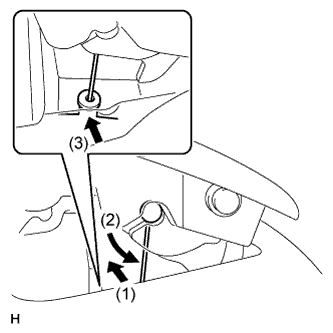
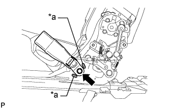

ЗАДНЕЕ СИДЕНЬЕ № 1 В СБОРЕ (выдвижное сиденье раздельного типа 60/40 с функцией облегчения посадки "Walk-in" с правой стороны) > ПОВТОРНАЯ СБОРКА |
| 1. УСТАНОВИТЕ РУЧКУ РЕГУЛИРОВКИ НАПРАВЛЯЮЩИХ ПРАВОГО ЗАДНЕГО СИДЕНЬЯ |
 |
Установите ручку.
Установите боковой каркас подушки сиденья.
| 2. УСТАНОВИТЕ КАРКАС ПОДУШКИ ПРАВОГО ЗАДНЕГО СИДЕНЬЯ В СБОРЕ |
Установите каркас подушки сиденья и пластину ножки сиденья и закрепите из 6 гайками.
| 3. УСТАНОВИТЕ ПРУЖИНУ ПОДУШКИ ЗАДНЕГО СИДЕНЬЯ |
Введите в зацепление 2 крепления, чтобы установить пружину.
| 4. УСТАНОВИТЕ ОБИВКУ ЗАДНЕГО СИДЕНЬЯ |
Закрепите крышку винтом.
| 5. УСТАНОВИТЕ РАМУ СПИНКИ ПРАВОГО ЗАДНЕГО СИДЕНЬЯ В СБОРЕ |
Временно закрепите каркас спинки сиденья 4 болтами "TORX".
Затяните 4 болта "TORX" с помощью торцевого ключа "TORX" T45.
| 6. УСТАНОВИТЕ ПЛАСТИНУ ЗАМКА СПИНКИ ЛЕВОГО ЗАДНЕГО СИДЕНЬЯ |
Установите пластину замка и закрепите ее гайкой.
Закрепите 2 зажима троса и подсоедините трос.
| 7. УСТАНОВИТЕ ПЛАСТИНУ ПОДУШКИ ЗАДНЕГО СИДЕНЬЯ |
Установите пластину и закрепите ее 2 гайками.
| 8. УСТАНОВИТЕ ТРОС УПРАВЛЕНИЯ НАКЛОНОМ ЗАДНЕГО СИДЕНЬЯ № 2 |
Подсоедините кабель.
Закрепите зажим троса, чтобы подсоединить трос.
| 9. ТРОС УПРАВЛЕНИЯ НАКЛОНОМ ЗАДНЕГО СИДЕНЬЯ |
Подсоедините кабель.
Закрепите 2 зажима троса и подсоедините трос.
Установите 3 новых бандажа жгута.
| 10. УСТАНОВИТЕ ПРУЖИННЫЙ АМОРТИЗАТОР ПОДУШКИ ЗАДНЕГО СИДЕНЬЯ |
Установите амортизатор и закрепите его 2 гайками.
| 11. УСТАНОВИТЕ ПРАВУЮ ВНУТРЕННЮЮ КРЫШКУ РЕГУЛЯТОРА НАКЛОНА |
Введите в зацепление захват и направляющую, чтобы установить накладку.
| 12. УСТАНОВИТЕ ПРАВУЮ ВНУТРЕННЮЮ КРЫШКУ РЕГУЛЯТОРА НАКЛОНА |
 |
Переместите накладку в направлении, указанном на рисунке стрелкой, чтобы ввести в зацепление 2 захвата.
Введите в зацепление фиксатор, чтобы закрепить накладку.
| 13. УСТАНОВИТЕ ПРАВУЮ ВНУТРЕННЮЮ КРЫШКУ РЕГУЛЯТОРА НАКЛОНА |
Введите в зацепление 2 захвата, чтобы установить крышку.
Вверните 2 винта.
| 14. УСТАНОВИТЕ ВНУТРЕННЮЮ ОТКИДНУЮ КРЫШКУ ПРАВОГО ЗАДНЕГО СИДЕНЬЯ |
Введите в зацепление направляющую, установите накладку и закрепите ее 2 винтами.
| 15. УСТАНОВИТЕ КРАЕВОЕ УКРЕПЛЕНИЕ СПИНКИ ЗАДНЕГО СИДЕНЬЯ |
Установите защитный элемент на каркас спинки сиденья.
| 16. УСТАНОВИТЕ ОБИВКУ СПИНКИ РАЗДЕЛЬНОГО ЗАДНЕГО СИДЕНЬЯ |
Установите обивку на подушку спинки сиденья и закрепите ее новыми витковыми пружинами, используя щипцы для витковых пружин.
| *1 | Щипцы для витковых пружин |
| 17. УСТАНОВИТЕ ОБИВКУ СПИНКИ СИДЕНЬЯ ВМЕСТЕ С ПОДУШКОЙ |
Введите в зацепление крепления.
| *1 | Щипцы для витковых пружин |
| *2 | Крюк |
| *3 | Витковая пружина |
Используя щипцы для витковых пружин, закрепите обивку спинки сиденья с подушкой новыми витковыми пружинами.
| 18. УСТАНОВИТЕ ДЕРЖАТЕЛЬ ПОДГОЛОВНИКА ЗАДНЕГО СИДЕНЬЯ № 1 В СБОРЕ |
Введите в зацепление 4 захвата, чтобы закрепить 2 держателя.
| 19. УСТАНОВИТЕ ПАНЕЛЬ ПОКРЫТИЯ СПИНКИ ПРАВОГО ЗАДНЕГО СИДЕНЬЯ В СБОРЕ |
Введите в зацепление 7 фиксаторов, чтобы установить коврик.
| 20. УСТАНОВИТЕ ОБИВКУ СПИНКИ ЗАДНЕГО СИДЕНЬЯ |
Введите в зацепление 4 захвата, чтобы закрепить обивку.
| 21. УСТАНОВИТЕ РЫЧАГ ФИКСАЦИИ СПИНКИ ЦЕНТРАЛЬНОГО ЗАДНЕГО СИДЕНЬЯ |
 |
Закрепите зажим троса, чтобы подсоединить трос к рычагу.
Переместите рычаг в направлении, указанном на рисунке стрелкой, чтобы ввести в зацепление направляющую.
Установите рычаг и закрепите его 2 винтами.
| 22. УСТАНОВИТЕ КРЫШКУ ОБИВКИ ЗАДНЕГО СИДЕНЬЯ |
Введите в зацепление направляющую и захват, чтобы установить колпачок.
| 23. УСТАНОВИТЕ РЫЧАГ ЗАМКА ПРАВОГО ЗАДНЕГО СИДЕНЬЯ В СБОРЕ |
|  |
Подсоедините трос в порядке, показанном на рисунке, и установите рычаг.
Заверните 2 винта.
| 24. УСТАНОВИТЕ КОЛПАЧОК ПРАВОЙ РУЧКИ РЕГУЛЯТОРА НАКЛОНА |
 |
Введите в зацепление направляющую и захват, чтобы установить колпачок.
| 25. УСТАНОВИТЕ ОБИВКУ ПОДУШКИ РАЗДЕЛЬНОГО ЗАДНЕГО СИДЕНЬЯ |
Установите обивку подушки сиденья на подушку сиденья и закрепите ее новыми витковыми пружинами, используя щипцы для витковых пружин.
| *1 | Щипцы для витковых пружин |
| 26. УСТАНОВИТЕ КРАЕВОЕ УКРЕПЛЕНИЕ ПОДУШКИ ЗАДНЕГО СИДЕНЬЯ |
Установите защитный элемент на пружину подушки.
| 27. УСТАНОВИТЕ ЭЛЕМЕНТ ЗАЩИТЫ ЗАДНЕГО СИДЕНЬЯ № 2 |
Установите 2 защитных элемента на подушку.
| 28. УСТАНОВИТЕ ОБИВКУ ПОДУШКИ СИДЕНЬЯ ВМЕСТЕ С ПОДУШКОЙ |
Подсоедините крепления, чтобы закрепить обивку подушки сиденья вместе с подушкой.
| 29. УСТАНОВИТЕ КРЫШКУ ЗАЩЕЛКИ ЗАМКА СПИНКИ ПРАВОГО ЗАДНЕГО СИДЕНЬЯ |
Установите крышку и введите в зацепление 3 фиксатора.
| 30. УСТАНОВИТЕ ЗАМОК РЕМНЯ БЕЗОПАСНОСТИ ЗАДНЕГО СИДЕНЬЯ В СБОРЕ |
Закрепите замок ремня гайкой.
| 31. УСТАНОВИТЕ ЗАМОК РЕМНЯ БЕЗОПАСНОСТИ ПРАВОГО ЗАДНЕГО СИДЕНЬЯ № 1 В СБОРЕ |
|  |
Установите замок ремня безопасности и закрепите его болтом.
| *a | Выступающая часть |
| 32. УСТАНОВИТЕ ЗАДНИЙ МОЛДИНГ ПОДУШКИ ЛЕВОГО ЗАДНЕГО СИДЕНЬЯ |
Введите в зацепление направляющую и 3 захвата, чтобы установить молдинг.
Заверните винт.
| 33. УСТАНОВИТЕ МОЛДИНГ ПОДУШКИ ПРАВОГО ЗАДНЕГО СИДЕНЬЯ |
 |
Переместите молдинг в направлении, указанном на рисунке стрелкой, чтобы ввести в зацепление направляющую, и установите молдинг.
Введите в зацепление 3 захвата и фиксатор, чтобы установить молдинг.
| 34. УСТАНОВИТЕ РУЧКУ ОТПУСКАНИЯ ПРАВОГО РЕГУЛЯТОРА НАКЛОНА |
Установите рукоятку и закрепите ее 3 винтами.
| 35. УСТАНОВИТЕ ВЕРХНЮЮ ОТКИДНУЮ КРЫШКУ ПРАВОГО ЗАДНЕГО СИДЕНЬЯ |
Введите в зацепление 3 захвата, чтобы установить крышку.